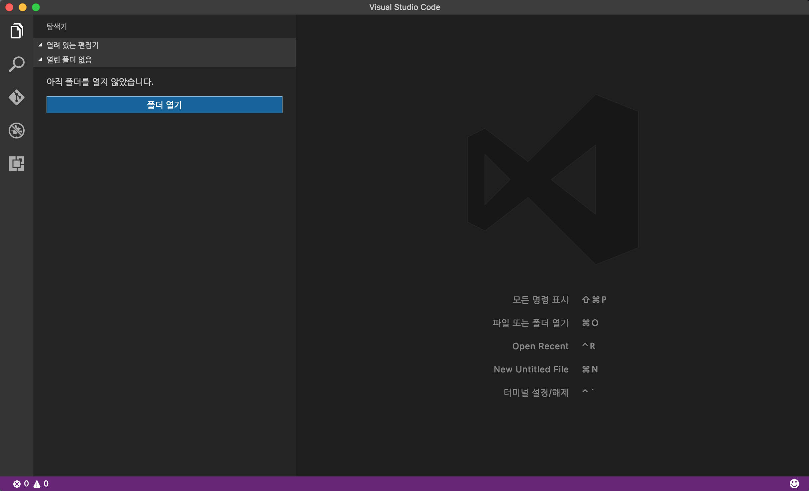
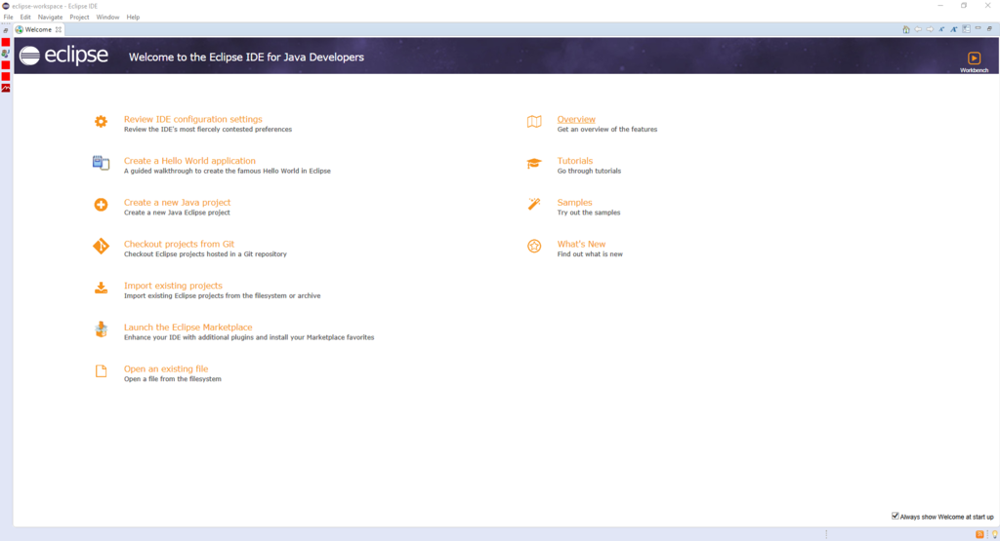
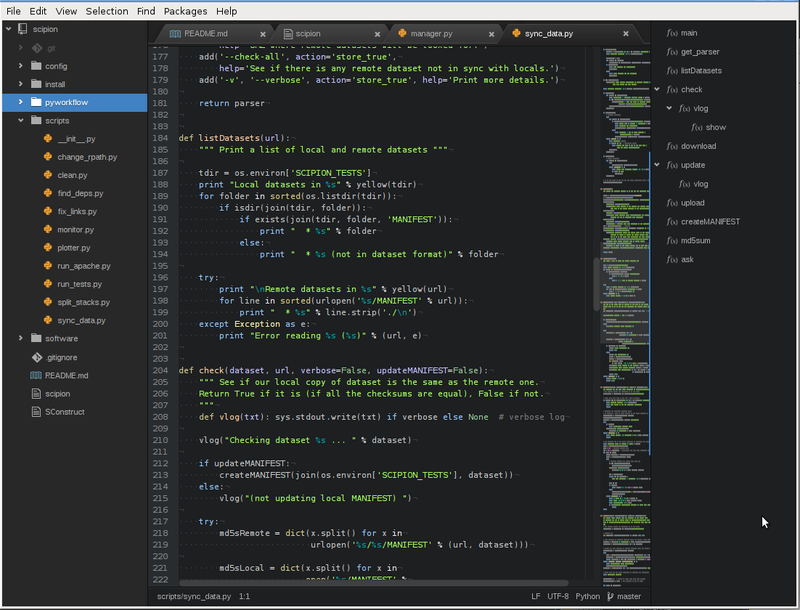

- IDE란?
- IDE의 종류
IDE의 종류
IDE의 종류는 무수히 많습니다. 그중에서 세 가지만 소개해드리도록 하겠습니다.
Visual Studio Code

비주얼 스튜디오 코드(영어: Visual Studio Code)는
마이크로소프트가 마이크로소프트 윈도우, macOS, 리눅스용으로 개발한 소스 코드 편집기이다.
디버깅 지원과 Git 제어, 구문 강조 기능등이 포함되어 있으며,
사용자가 편집기의 테마와 단축키, 설정 등을 수정할 수 있다.
비주얼 스튜디오 코드는 깃허브가 개발한 일렉트론 프레임워크를 기반으로 구동된다.
그러나 같은 일렉트론 기반의 편집기 아톰을 포크한 것은 아니며,
비주얼 스튜디오 온라인 에디터(코드명 "모나코")를 기반으로 개발되었다.
출처:위키백과
Eclipse

이클립스(영어: Eclipse)는 다양한 플랫폼에서 쓸 수 있으며,
자바를 비롯한 다양한 언어를 지원하는 프로그래밍 통합 개발 환경을 목적으로 시작하였으나,
현재는 OSGi를 도입하여, 범용 응용 소프트웨어 플랫폼으로 진화하였다.
자바로 작성되어 있으며, 자유 소프트웨어이지만 막강한 기능을 자랑한다.
2004년과 2005년 졸트 어워드(Jolt Award)를 수상했다.
식(蝕)을 뜻하는 이클립스란 이름은 자바를 개발한 회사의 SUN(재단)이란 이름을 염두에 두었다는 말도 있어
2003년도에 썬 마이크로시스템즈는 이클립스 재단에 참여하지 않았던 이유 중의 하나였지만
2005년도에 열린 EclipseCon의 키노트에서 Lee Nackman은
그 목적은 원래 마이크로소프트와 비주얼 스튜디오 생태 시스템을 겨냥한 것이었다고 말했다.
원래 IBM의 웹스피어 스튜디오 애플리케이션 디밸로퍼(WebSpheare Studio Application Developer)란 이름으로 개발되었던 것인데,
엔진부분을 오픈소스로 공개한 것을 기반으로 지금의 이클립스로 발전해 왔다.
최근 버전은 4.6.2이며 (C/C++ 개발자용, 자바 개발자용, 웹 개발자용 등등) 다양한 배포판이 존재한다.
출처:위키백과
Atom

아톰(Atom)은 자유-오픈 소스 형태의 OS X, 리눅스, 윈도용[5] 문서 및 소스 코드 편집기이다.
Node.js로 작성된 플러그인, 깃허브가 개발한 임베디드 깃 관리 지원을 포함한다.
대부분의 확장 패키지는 자유 소프트웨어 라이선스를 취하며 커뮤니티가 만들고 관리하고 있다.
아톰은 크로미엄에 기반을 두며 커피스크립트로 작성되어 있다.
IDE로 사용할 수도 있다. 2015년 6월 25일에 정식 1.0 버전이 출시되었다.
출처:위키백과